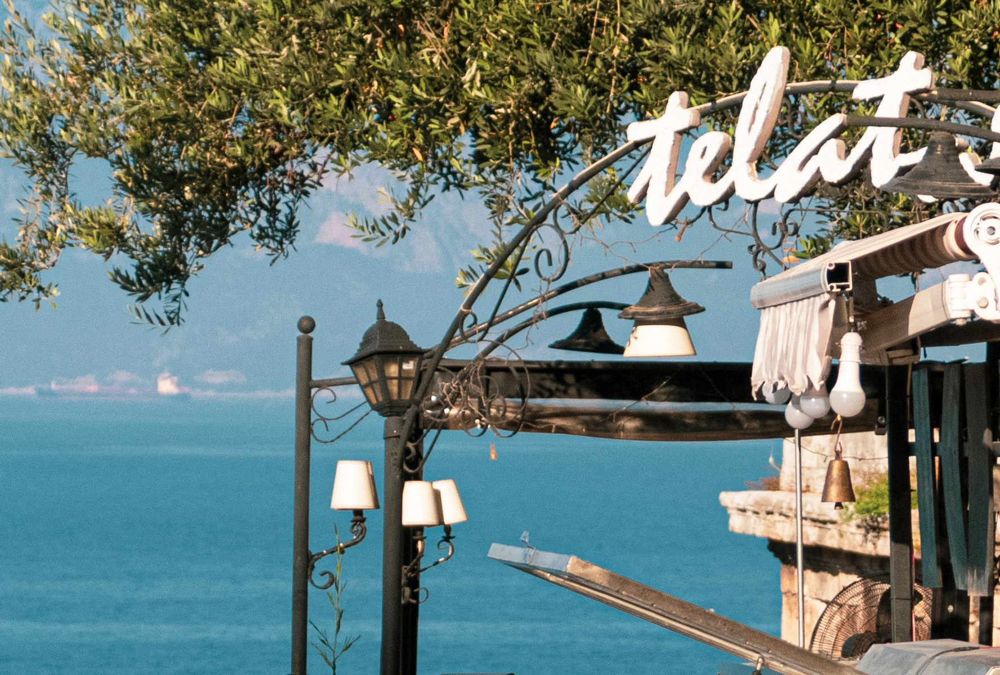
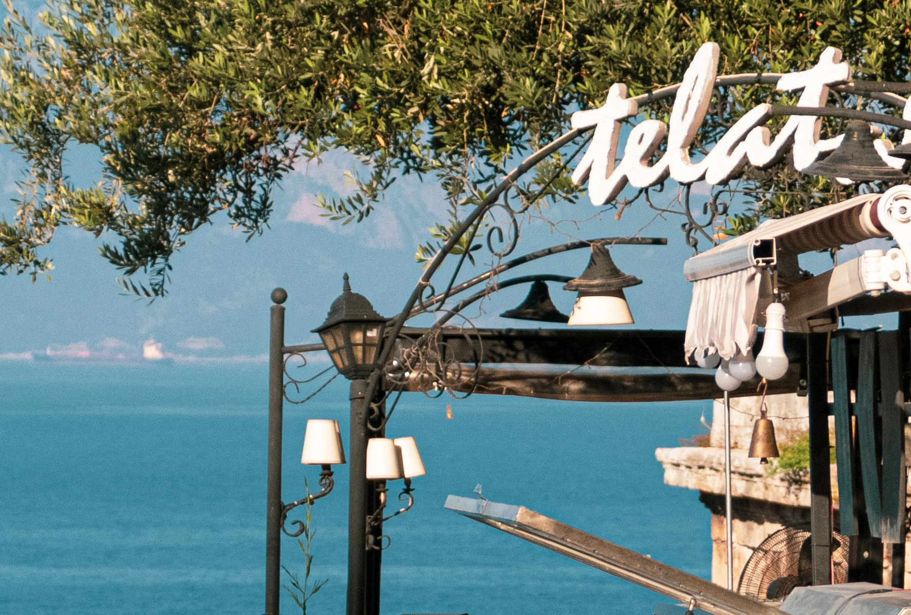
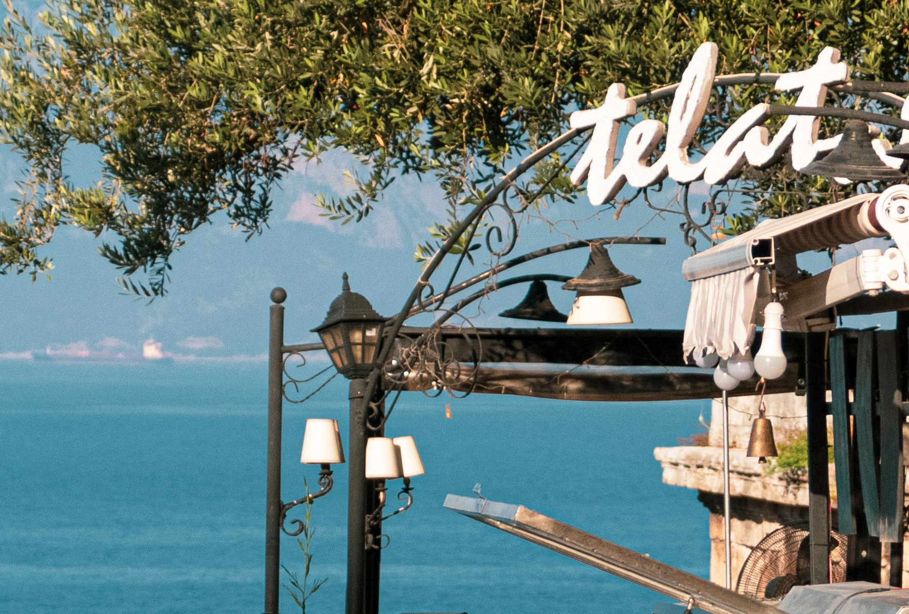
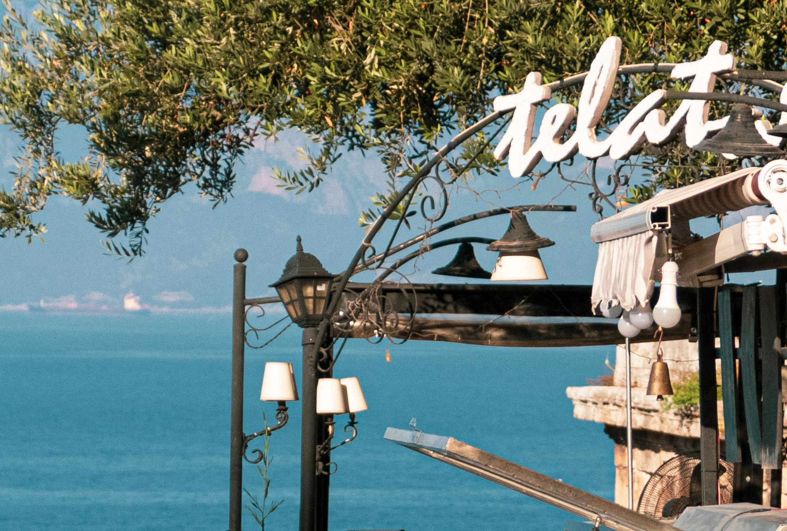
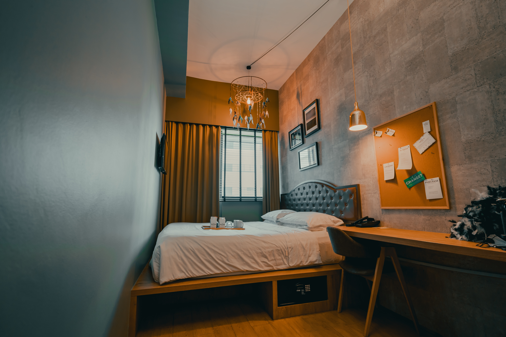
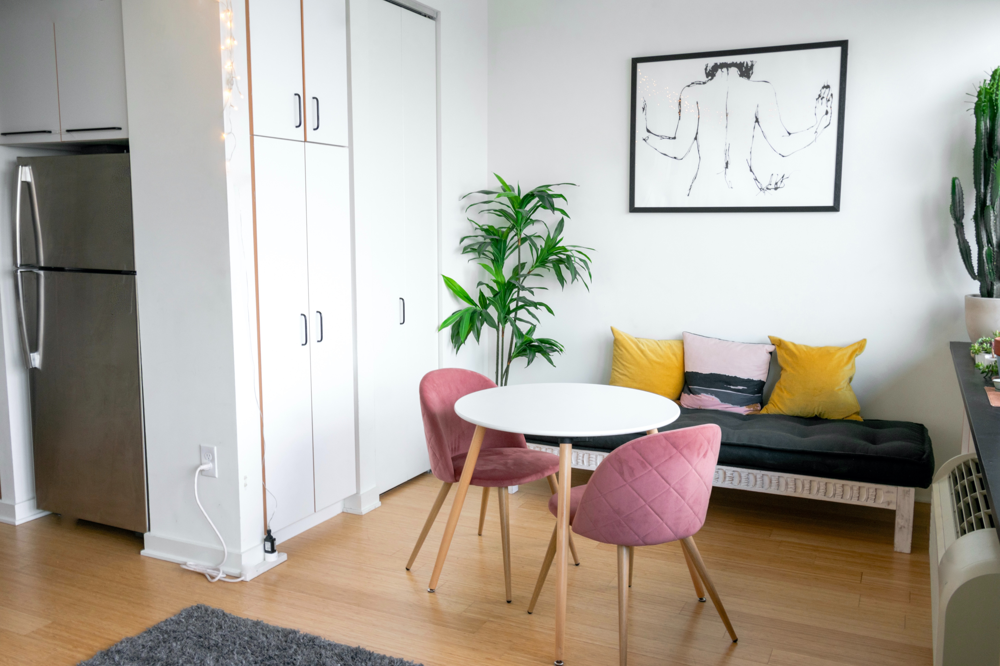
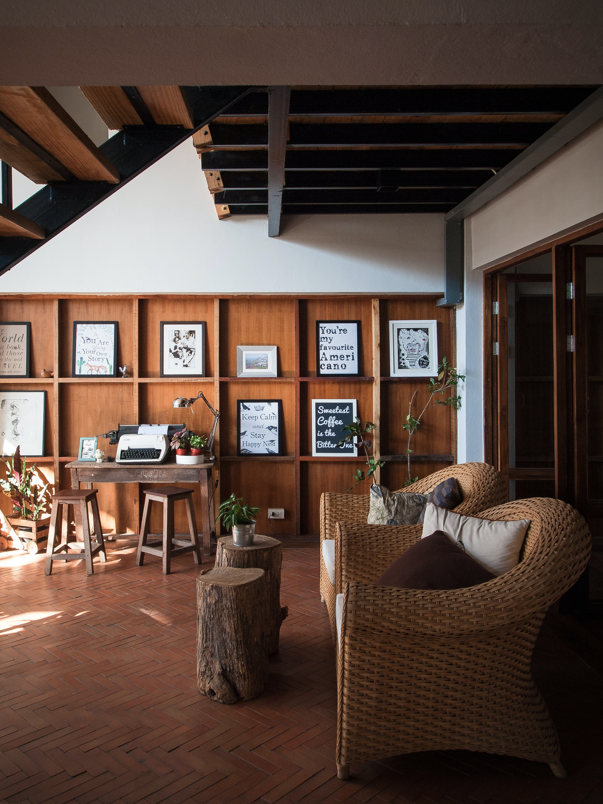
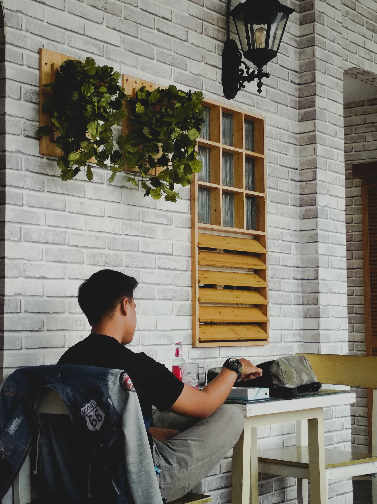

Este dormitorio es espacioso y acogedor, con dos cómodas camas individuales y una ventana que brinda mucha luz natural. La ropa de cama es suave y limpia, y hay un armario para guardar tus pertenencias.
Si buscas un espacio privado para descansar, este dormitorio es ideal. Con una cama matrimonial y una decoración minimalista pero elegante, te sentirás como en casa enseguida. También hay un escritorio para trabajar o estudiar.
 En este espacio, podrás disfrutar de tus comidas con vistas a la ciudad.
La mesa es grande y resistente, con sillas cómodas para sentarse.
La decoración es sencilla pero acogedora, y hay plantas en el ambiente para un toque de frescura.
En este espacio, podrás disfrutar de tus comidas con vistas a la ciudad.
La mesa es grande y resistente, con sillas cómodas para sentarse.
La decoración es sencilla pero acogedora, y hay plantas en el ambiente para un toque de frescura.
Aquí puedes relajarte y disfrutar de un momento de tranquilidad. El sofá es amplio y cómodo, perfecto para una tarde de lectura o para ver una película. Hay una mesa de centro para colocar tus bebidas o bocadillos, y la decoración es moderna y relajante. ¡Descansa y desconecta en este espacio acogedor!
 Desde esta terraza podrás apreciar las vistas impresionantes de la ciudad. Hay sillas y mesas para sentarte cómodamente y disfrutar del sol o de una noche fresca. La terraza es amplia y tranquila, ideal para relajarte después de un día de turismo o para compartir un momento especial con tus seres queridos. ¡No te pierdas esta vista panorámica única!
 Este dormitorio con litera es perfecto para aquellos que viajan en grupos o en familia.
La litera cuenta con dos camas, una en la parte superior y otra en la inferior, y ambas son cómodas y acogedoras.
La habitación cuenta con una ventana que proporciona luz natural, y la ropa de cama es suave y limpia para que puedas descansar tranquilamente.
Además, hay un armario para que puedas guardar tus pertenencias de manera ordenada y tener más espacio en la habitación.
¡Disfruta de una estancia cómoda y relajante en este dormitorio con litera!
Este dormitorio con litera es perfecto para aquellos que viajan en grupos o en familia.
La litera cuenta con dos camas, una en la parte superior y otra en la inferior, y ambas son cómodas y acogedoras.
La habitación cuenta con una ventana que proporciona luz natural, y la ropa de cama es suave y limpia para que puedas descansar tranquilamente.
Además, hay un armario para que puedas guardar tus pertenencias de manera ordenada y tener más espacio en la habitación.
¡Disfruta de una estancia cómoda y relajante en este dormitorio con litera!